This page contains my notes from the following books:
Index for Book:
Chapter 0 - Interesting Links
Chapter 1 - Introduce a presenter for the view class
Chapter 2 - Injecting mock objects to fields defined as
final Chapter 3 - Using
static factory to inject dependencies Interesting Links
Links
-
Chapter 1: Introduce a presenter for the view class
Initial Setup before change
- We have the PersonView class which defines certain methods on it. This view is being used in the LifeEvent class. The LifeEvent class is (assume)
injected with a PersonView class. On this instance of PersonView, the LifeEvent class calls multiple methods.
- What we want to change over here is that we want to introduce a PersonPresenter, that will be injected into the LifeEvent, and instead of calling the methods on the instance of PersonView, we will instead be calling the methods on the instance of PersonPresenter. And that PersonPresenter will then delegate to the corresponding method in the PersonView class.
- This is the flow of control right now. As you can see, it's pretty straightforward: 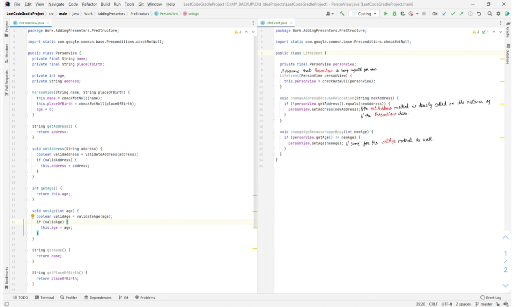
- What we want to change over here is that we want to introduce a PersonPresenter, that will be injected into the LifeEvent, and instead of calling the methods on the instance of PersonView, we will instead be calling the methods on the instance of PersonPresenter. And that PersonPresenter will then delegate to the corresponding method in the PersonView class.
- This is the flow of control right now. As you can see, it's pretty straightforward: 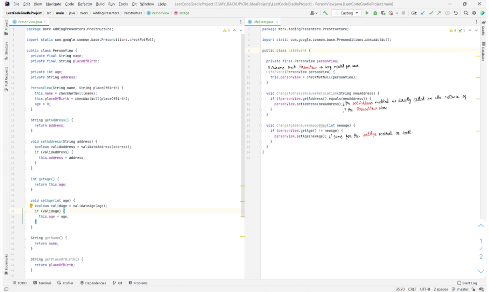
Introducing the Presenter and View interfaces following the MVP Model
- The first step will be to add a Presenter class for the PersonView. For this we are going to add two new interfaces that are going to "bind" the presenter to the
view. This follows the MVP model.
Expand Gist 
Adding a Presenter for PersonView
- Now that we have the interfaces set up, the next step is to add the PersonPresenter using the MVP model that we specified above. This is what the
PersonPresenter class looks like:
- Corresponding to this, we will now have to change the PersonView class so that it
- The things to highlight are in here:
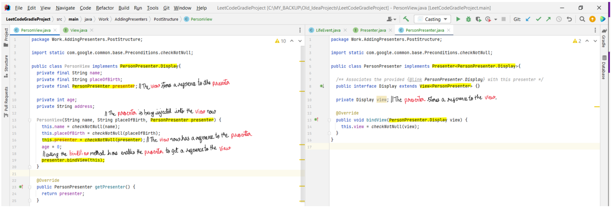
Expand Gist
implements the PersonPresenter.Display interface that we
created above. This is what the modified PersonView class looks like:
Expand Gist
Re-routing all calls to the view to instead go through the presenter
- By adding the presenter for the PersonView class, we have setup the skeleton code that we need to enable us to manage the view through the presenter.
- The way we do this is:
a) We note all the methods that are being called on the PersonView class from other classes.
b) We add all those methods to the PersonPresenter and to the Display interface defined within it.
c) Add
d) Replace the instances of PersonView being used in the other classes, with instances of PersonPresenter instead.
a) These are the methods that are being called on the PersonView: 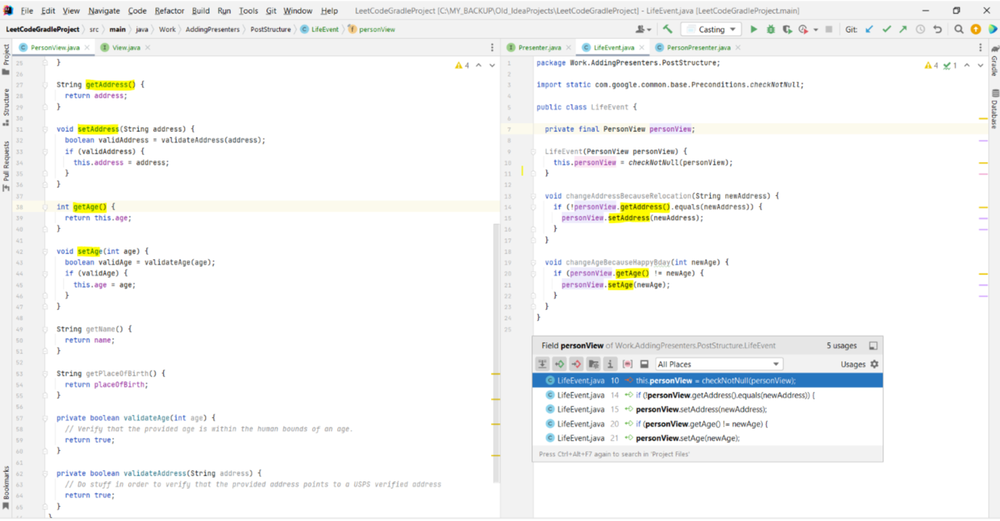
b) Add methods to the interface and to the PersonPresenter class: 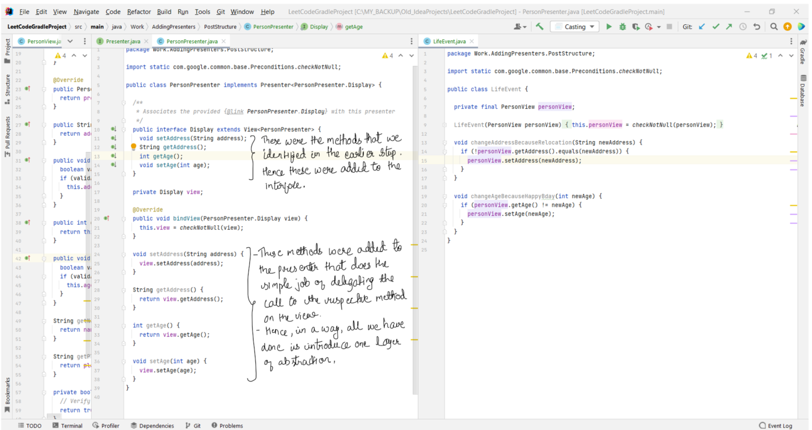
c) Add

d) Remove PersonView from other classes, and instead use PersonPresenter:
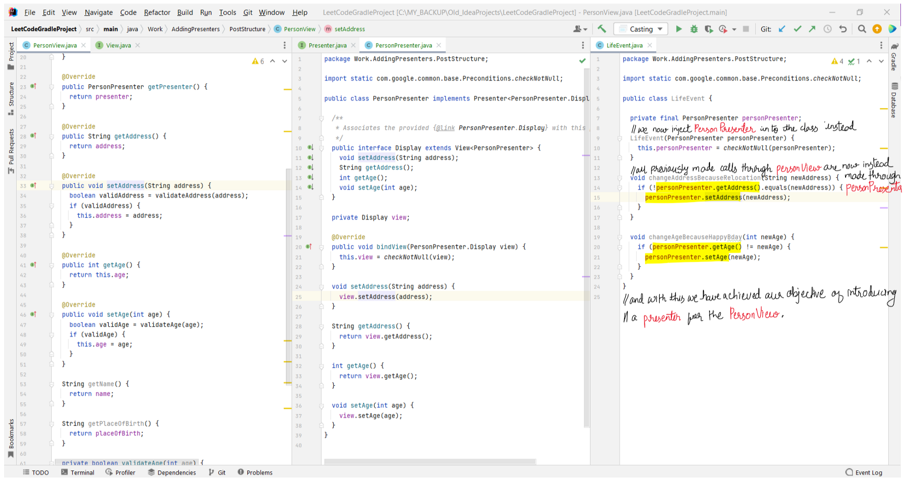
- So to recap, the final flow of control is going to look like this:
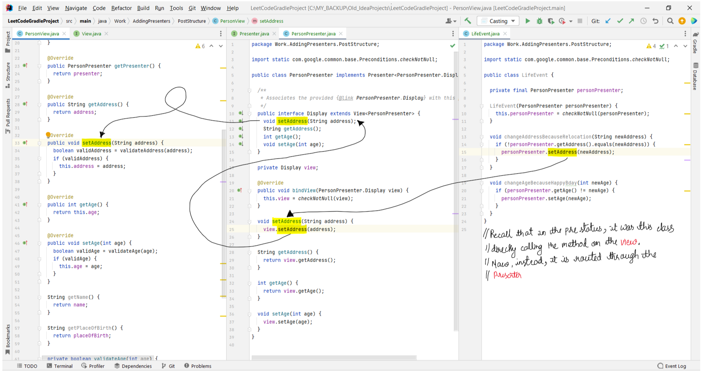
- There is a certain amount of hand-waviness going on over here, because we have intrinsically changed the order of the execution of the code. Earlier, the PersonView was being injected into the LifeEvent class. Hence, that is where the PersonView was being expected to be created. But now, we have replaced the PersonView with the PersonPresenter, and the PersonView is never instantiated. So for the sake of this example, assume that a PersonView instance has already been created and associated with the PersonPresenter class by invoking it's bindView method.
- The way we do this is:
a) We note all the methods that are being called on the PersonView class from other classes.
b) We add all those methods to the PersonPresenter and to the Display interface defined within it.
c) Add
@Override annotation to the corresponding method in the PersonView class. d) Replace the instances of PersonView being used in the other classes, with instances of PersonPresenter instead.
a) These are the methods that are being called on the PersonView: 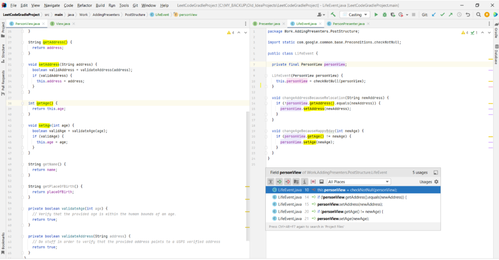
b) Add methods to the interface and to the PersonPresenter class: 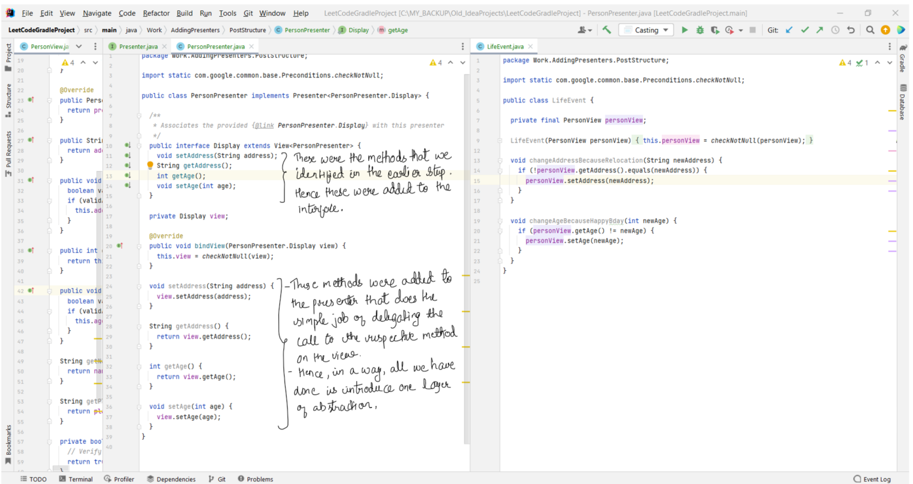
c) Add
@Override annotation to the view methods that were added to the interface:
d) Remove PersonView from other classes, and instead use PersonPresenter:
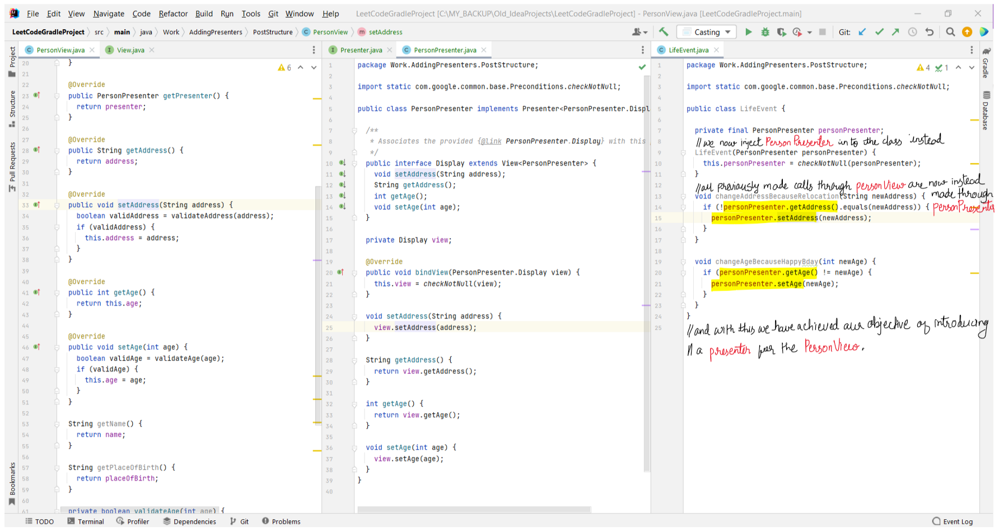
- So to recap, the final flow of control is going to look like this:
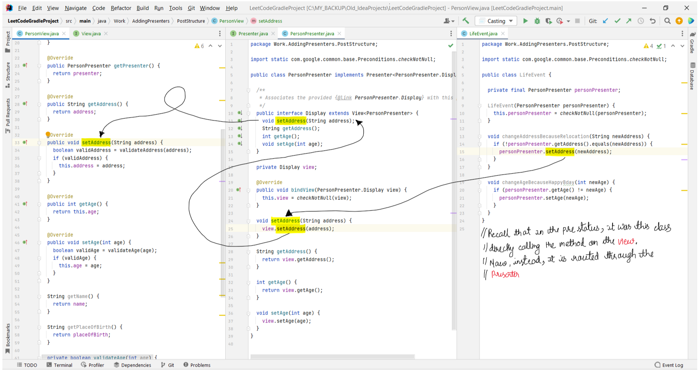
- There is a certain amount of hand-waviness going on over here, because we have intrinsically changed the order of the execution of the code. Earlier, the PersonView was being injected into the LifeEvent class. Hence, that is where the PersonView was being expected to be created. But now, we have replaced the PersonView with the PersonPresenter, and the PersonView is never instantiated. So for the sake of this example, assume that a PersonView instance has already been created and associated with the PersonPresenter class by invoking it's bindView method.
Refactoring the PersonView to move common logic to the PersonPresenter
- We want to be sending data from the presenter to the view via methods defined on Display. And only triggering presenter methods from the view when UI actions are
taken. In general, we update the view/presenter interface so that the data flow works like this:
a) Presenter sends data needed to the view. This is all the data that the view needs for rendering. More specifically, we want to avoid patterns where the view has to reach out to the presenter for any data that it needs, and instead have the presenter send the data.
b) View sends UI events back to the presenter, which usually trigger a refresh (step 1 again). Similar to the above case, we want to avoid cases where we have the presenter reaching out to the view to get some data that was modified due to user input. Ideally, we want the event listeners defined on the view to update the presenter whenever data is changed.
- The intention is to move business logic from the view to the presenter. This includes any logic that is not directly related to UI/rendering.
- For instance, this is what the view/presenter looks like before the refactor. The logic to validateAddress is not specifically related to the UI, and hence can be moved to the presenter. 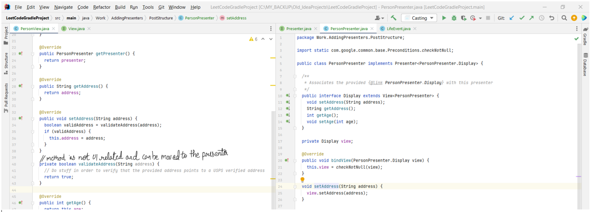 - This is what the view/presenter looks after the refactor has been done: 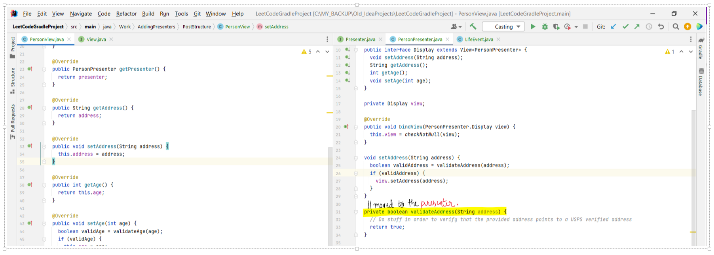
a) Presenter sends data needed to the view. This is all the data that the view needs for rendering. More specifically, we want to avoid patterns where the view has to reach out to the presenter for any data that it needs, and instead have the presenter send the data.
b) View sends UI events back to the presenter, which usually trigger a refresh (step 1 again). Similar to the above case, we want to avoid cases where we have the presenter reaching out to the view to get some data that was modified due to user input. Ideally, we want the event listeners defined on the view to update the presenter whenever data is changed.
- The intention is to move business logic from the view to the presenter. This includes any logic that is not directly related to UI/rendering.
- For instance, this is what the view/presenter looks like before the refactor. The logic to validateAddress is not specifically related to the UI, and hence can be moved to the presenter. 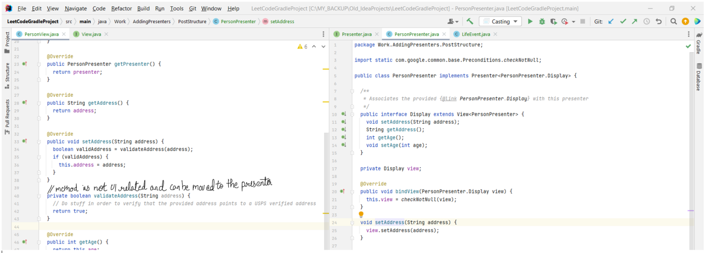 - This is what the view/presenter looks after the refactor has been done: 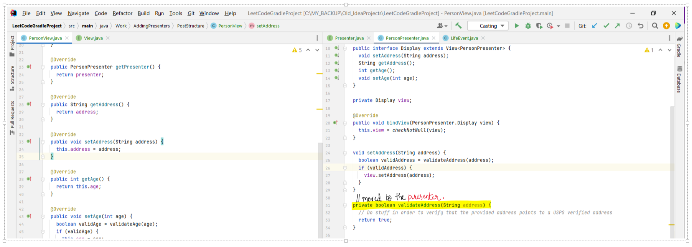
Views can contain sub-views of their own
- A view might contain other views inside it. For example, the PersonView might have a subview for a dropdown that allows the end-user to change the height of the
user. This dropdown is now a sub-view, that needs a presenter of its own. This presenter will be injected into the PersonPresenter, and will be controlled from there.
Point is, the PersonView does not need to know about how the dropdown is being managed. When a value on the dropdown changes, the view updates the
PersonPresenter with the new value, and the PersonPresenter can then make sure that the presenter for the dropdown is made aware of the change.
Chapter 2: Injecting mock objects to fields defined as
finalInitial Setup before change
- // Look at PropertyPathEditorPresenter
Chapter 3: Using
static factory to inject dependenciesInitial Setup before change
- // Look at PathEditorPopup